더인 교육 18일차
Cleaning Review · CMP · 듀얼 다마신 설명 (Etch stopper에 대한 설명) · Review Metal 17, 18개 · What is CMP · CMP Utilization · CMP에서 중요한 것들 - 14pg · 25pg - Preston’s Law · 26pg - CMP Pad · 32,33pg - CMP Slurry - Contents · 34pg - CMP Slurry 종류 · 오후 수업 · Zeta potential -44, 45, 46pg · 다양한 Slurry들 · Ceria (CeO₂) · STI CMP - 71pg · W CMP - 73pg · Cu CMP - 80pg, 81pg · Future Tech - 99pg · 지난 주 숙제에 대한 설명
1. Cleaning Review
목적
Cleaning - 결국 수율 향상 (소자 신뢰성 확보)
오염 종류
1~4
Cleaning 방법
Chemical
Physical
RCA
SC1 H₂O₂ NH₄OH D.I
SC2 H₂O₂ HCl D.I
전체적인 방향성
용액의 온도 낮, 농도 낮, 스텝수 적
Surface Roughness
전자(하) 이동도에 영향을 미친다
Non-Uniformity
Batch type, Single type 왜 변화? Uniformity 관점에서 균일도를 확보하기 위해. 하지만 Single Type은 Throughput이 안좋고, Etchant를 많이 사용하기 때문에 Semi batch type으로 가려고 함.
→ WTW, WIW, PTP
- 그리고 PTP는 Lithography 관점에서 우리가 그림을 그려서 공부했었음
Ref) CMP에서도 PTP가 중요하다.
2. CMP
CMP의 최대 수혜자는 Litho
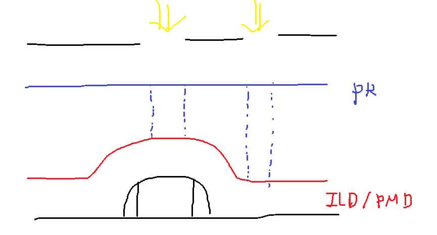
- 이때 gate에 Focus를 맞출지, Active area 맞출지를 결정해야한다.
- 그래서 그림과 같은 경우에 어디에 맞춰야 할지 고려할 때 생각하는 것이 DOF, DOF margin을 생각해야 한다.
DOF는 주황색이고, 중앙 값에 맞췄을 때 그 차이를 말한다.
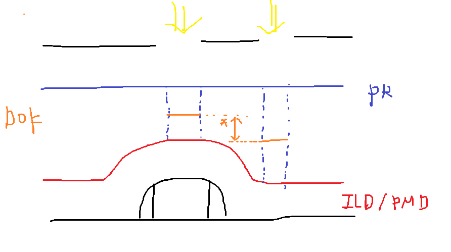
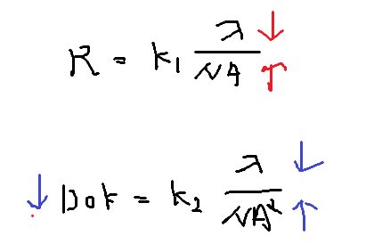
- Res를 확보하는게 우선이다. 먼저 패턴이 작게 형성 되는 것이 먼저인데, 수식적으로 보면 DOF는 동일한 람다와 NA 식을 가지고 있으니 DOF 값은 어쩔 수 없이 작아지는 것이다.
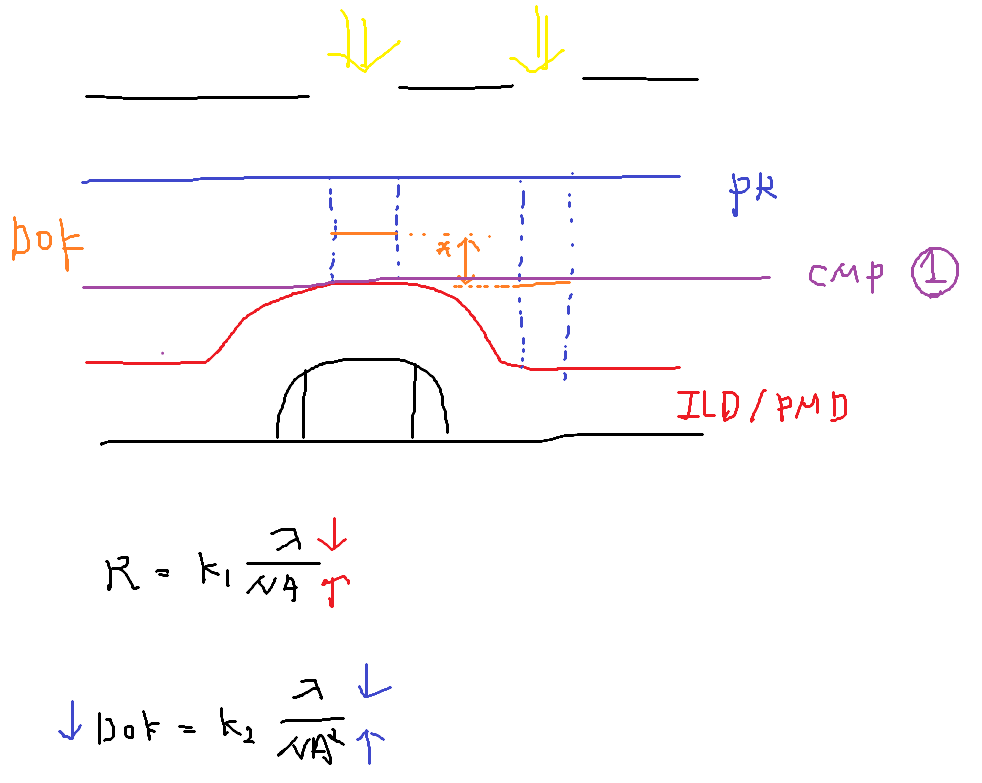
- 이제 DOF 의 차이를 줄이기 위해서 CMP 1번까지 갈아주게 되는 것이다. 그러면 초점을 맞춰야하는 차이가 줄어들기 때문이다??? (이건 그림이 헷갈려가지고 다시 봐야겠다.)
다시 정리해봤음
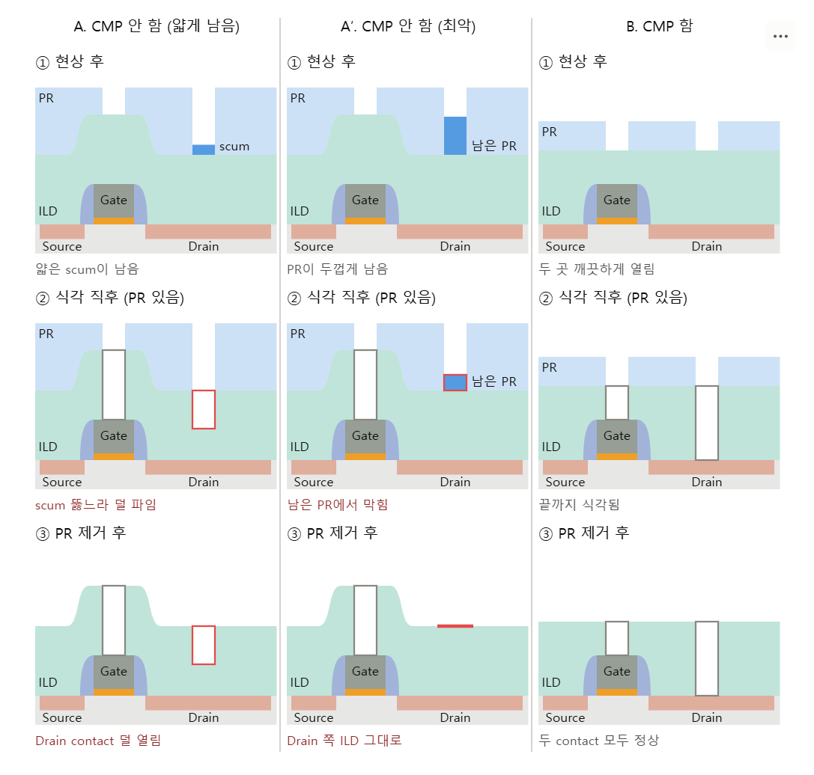
3. 듀얼 다마신 설명 (Etch stopper에 대한 설명)
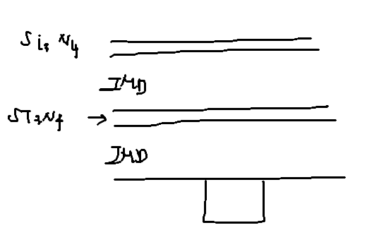
- Si₃N₄가 있고 IMD 이게 두번 반복
근데 만약에 Etch stopper 가 없으면?
Q. 실제 타겟이 3000Å이면 얼마를 Etch를 해야하는가?
A.
- 실제 증착을 하면 3000Å가 되지를 않는다. 평균적으로 3000Å가 되는 것이다. 그러니까 30%? 정도는 Over Etch를 진행하는 것이다.
- 그래서 만약에 3000Å를 Etch하는 것이 목표로 하더라도 4000Å만큼 오버Etch를 시킬 것이고, 만약에 Etch stopper가 없으면 쭉 식각되어 들어가버릴 것이다. 멈춘다는 개념이 없을 것이다.
- 결국 우리는 SiO₂를 식각하고 있는 것이고, SiO₂가 식각될 때 식각이 안된 곳은 Nitride가 버텨줘야 하고 있는 것이다.
- 근데 Nitride 선택비는 10:1이니까 위에 SiO₂가 식각될 때 버틸 수 있는 것이다.
– SiO₂:Si₃N₄ = 10:1
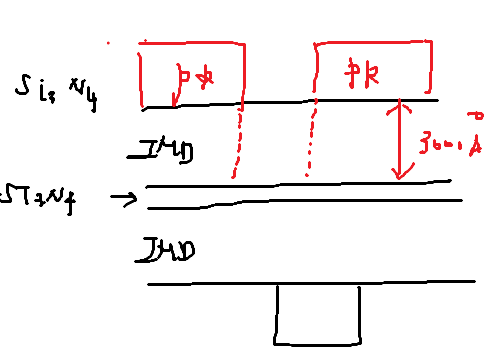
Low-K (위 설명과 계속 이어짐)
- 우리가 요즘 사용하는 것은 Air Gap을 사용하는게 Low k를 만들기 위함이다.
- Nitride는 유전상수는 7.0이고, SiO₂는 3.9인데 그러면 Low-k 관점에서 Etch stopper 역할은 좋지만 또 Low-k를 사용하려는 노력과는 반대이다. (Trade-off)
- Nitride를 그래서 완전히 제거해야한다.
4. Review Metal 17, 18개
- 이렇게 길게 이어지는 이유는 voltage drop이 생기게 되기 때문에.
- Voltage drop이 생기는 이유는 Metal이 길어져서? V=IR에서 저항이 커지고 …?
- 근데 Voltage drop이 생기는거랑 metal 자체가 여러개 되는 것이랑은 무슨 상관인데?
대상: “근데 Voltage drop이 생기는거랑 metal 자체가 여러개 되는 것이랑은 무슨 상관인데?”
이거 이해하고 넘어가기
5. What is CMP
- SiO₂에서 CMP는 OH-기가 Si-O-Si를 가수분해 시켜 제거하기 쉬운 상태로 만든다.
- Metal은 아마 산화로 약하게 만들어줄 것 같긴해.
평탄화의 필요성
- STI, Tungsten Plugs, Copper Damascene process(구리도 CMP가 없었으면 Etch가 안되니까 사용을 못했지)
- Al은 Cl₂ gas로 etch하는데 Cu는 Cl₂ gas로 etch가 안되더라.
대상: “STI, Tungsten Plugs, Copper Damascene process(구리도 CMP가 없었…”
Etch 할 때 무슨 gas 사용하는지 다시 복습하기!
6. CMP Utilization
- Buffer는 blanket 상태에서 밀어낸다?
- W, Cu CMP도 많이 시키고, ILD IMD CMP도 많이 시키고, STI도 CMP 하고
– Al는 gas로 Etch가 되니까 CMP를 논할 것도 없지
대상: “Buffer는 blanket 상태에서 밀어낸다?”
이게 뭔데??
과거에 울퉁불퉁했을 때 어떤 문제가 생겼는가?
- Step coverage가 안좋아진다. → Metal의 신뢰성 문제 (밑에 신뢰성 문제가 일어나는 이유)
- Electromigration이 일어나면 폭이 좁아지는 곳이 생기고 전류의 흐름이 집중적이 되고 → 열이 발생하고 → 그러면 전자가 쉽게 이동하고 → 결국 끊어지게 될 수도 있다.
7pg
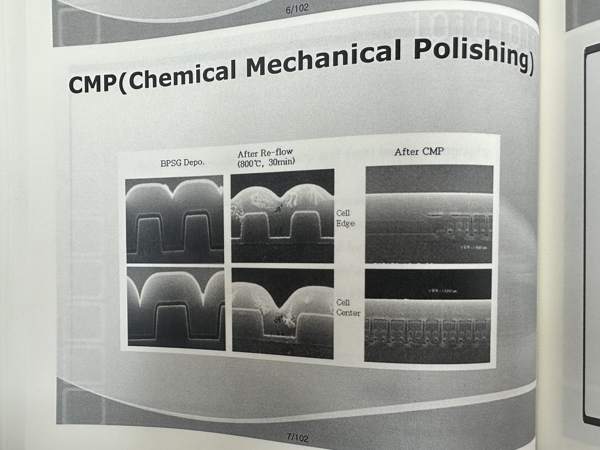
- USG (Undoped Silicate Glass)
– SiO₂이다.
– TEOS는 PE를 통해서나 오존을 통해서나 만들었다.
- BPSG는 Boron이나 Phosphorus는 도핑을 해서 만든 것인데, 그러면 열을 가했을 때 (Re-flow) 다시 흘러버리게 된다??
- BPSG가 Reflow 공정을 거쳐서 평탄화가 조금 되긴 한다는 것이다. 긍정적이라는 것이지. Reflow공정은 열을 주는 것이고, BP가 도핑 된 걸 알면 되는 것이고. 그렇지만 여기에서 결국 이걸로 다 되는게 아니고 예전에 과거에는 이렇게 했다는 것이다.
대상: “USG (Undoped Silicate Glass)”
silicate가 SiO2야?
8pg
- 표면에 스크래치가 생길 수 있는데, pad나 slurry를 사용해서 완화시켜주고 있다.
- particle도 문제가 되는데, 이건 또 브러쉬나 이런걸 사용해서 공정 조건을 잘 만들어주려고 한다.
- Post CMP cleaning은 Chemical 사용해서 cleaning 해주는 것임
CMP
- End Point Detector, In-Line Metrology 이런 것들이 있다. 그리고 이런게 조금 어렵다.
- 궤도를 가지면서 원운동을 한다고 함
- 중심축이 이동하면서 원운동
7. CMP에서 중요한 것들 - 14pg
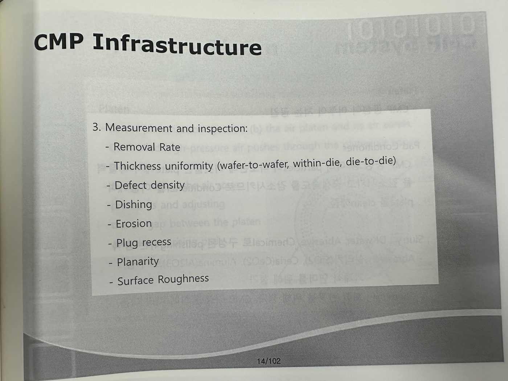
- 가장 중요한 것은 분당 얼마나 제거되는지 - 압력과 속도에 큰 영향을 받음
- CMP에서도 가장 중요한건 pattern density. 왜냐하면 pattern 밀도 차이가 pattern이 많으면 힘을 더 나눠서 받게 되고, pattern이 별로 없으면 몇 개가지고 힘을 받는 상황이니 더 많이 제거가 된다.
– pattern 밀도 크면 제거가 덜 되고, pattern 밀도 작으면 제거가 더 많이 된다.
– Pattern Density가 얼마나 되는지도 중요하고, Loading Effect 그러니까 칩 안에서도 pattern 들이 어떻게 분포해 있는지도 중요하다.
- Dishing은 pattern 이 없는 곳에서 푹 꺼지면서 접시 모양처럼 되는 것을 말하고, 그 부분을 dummy pattern을 통해서 보완해줄 수도 있다.
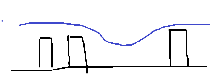
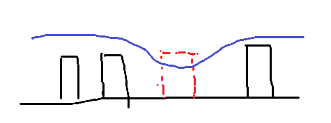
- plug recess라는 건 너무 많이 CMP를 해서 주변부가 날라가는 것이다.
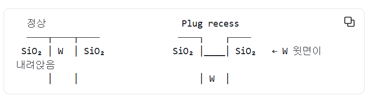
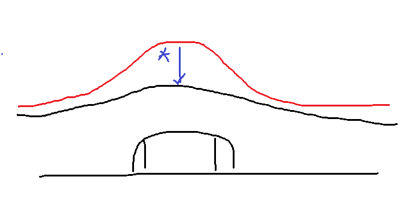
- Planarity는 평탄화 된 정도를 말한다. *이 정도를 말함
15pg
- 공정을 하다보면 여러 particle이 나오는데 이게 마찰력을 감소시킨다. So Conditioner는 왔다갔다 하면서 plate를 clean 해준다.
- Slurry에 Abrasive는 연마제이다. 해당 연마제에 따라서 SiO₂(실리카) 슬러리, CeO₂(세리아) 슬러리, Al₂O₃(알루미나) 슬러리라고 한다. 그리고 연마제도 크기에 따라서 결과가 달라진다.
- Chemical은 어떤걸 갈아내냐에 따라서 달라진다. Cu는 산화가 잘 되어서 산화억제제? 그리고 pH를 조절하는 계면활성제 등을 넣어준다.
16pg, 17pg - Platen
- Platen위에서 CMP 위에서 진행되는 것이다.
- 밑에서 Air가 불어넣어져서 압력이 조절된다. (압력조절은 공기로 진행한다)
– 그래서 밑에서 zone별로 구간이 나눠져있고, 압력을 이런식으로 control 가능하다.
18pg - Wafer Carrier
- Wafer Carrier 에 대한 설명이다. Wafer에서 Retainer ring은 양쪽에서 잡아주고 있다.
- 여기에서 압력을 가해주는 방법은 위쪽에서 공기로 밀어넣는 것이다.
21pg - Removal Rate
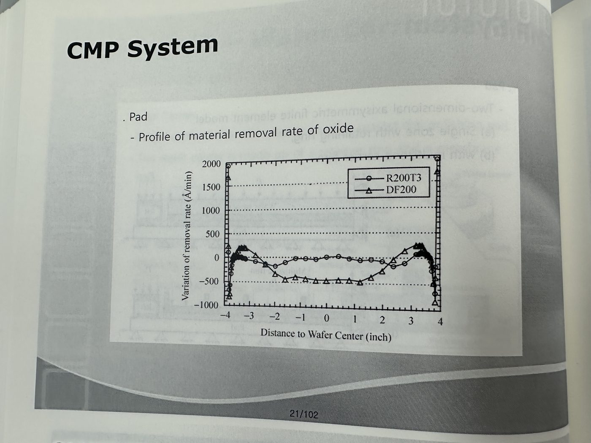
- Center보다 양쪽에서 더 빨리 Removal 된다. 가운데는 Removal이 잘 안되는 상황
- 이렇게 불균일하게 된 세모의 경우는 가운데 쪽에 압력을 줘서 동그라미처럼 만드려고 노력해야겠지?
22pg - Conditioner
- Pad에 hole이 있고, 이 hole을 통해 슬러리들이 움직이는 것이다.
– 아마 Pad는 바닥을 말하는거지? ㅇㅇ
- 공정을 진행하다보면 이 hole들이 채워지게 되면 Removal rate가 떨어지기 때문에 Conditioner을 통해서 다시 hole을 비워줘 Removal rate이 떨어지지 않게 도와준다.
– Pad의 hole을 얘기하는거지?
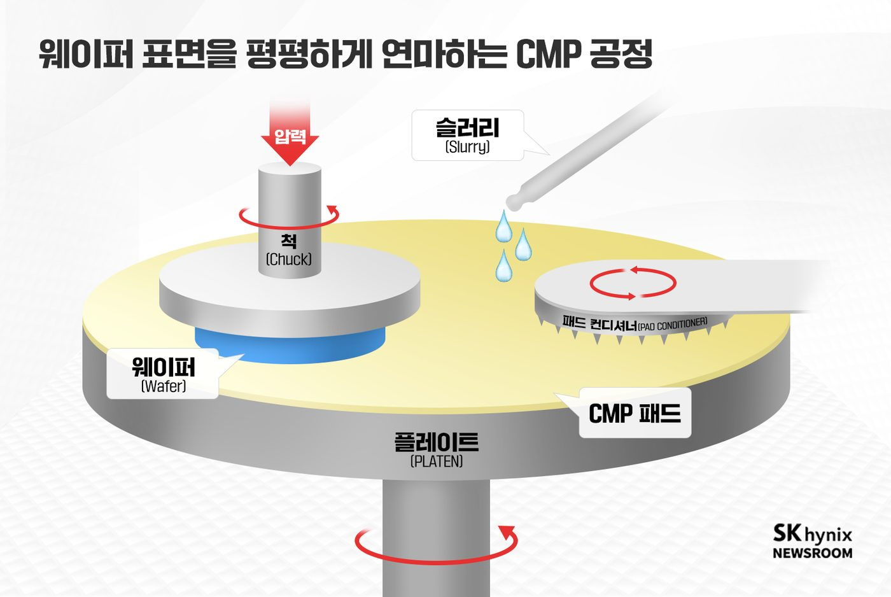
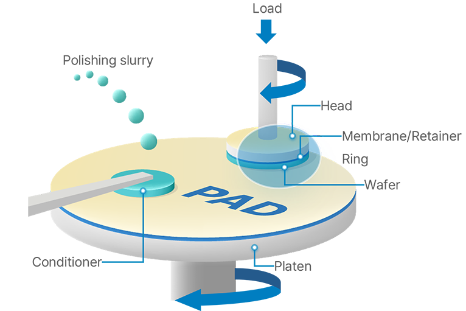
8. 25pg - Preston’s Law
- RR = Kp · P · V
– Removal Rate는 압력과 속도에 관련 있다.
9. 26pg - CMP Pad
- Polyurethane으로 구성 됨
- 사진에 보이는 동글뱅이들은 다 Hole 들이다.
- Top Pad와 Bottom Pad로 이루어져 있다.
– Top pad는 groove와 pore로 이루어져 있다. 직접 맞닿는 부분
– Bottom pad는 soft 하고 압력을 분산시키는 역할을 한다.
– Groove라는 것은 slurry가 이동할 수 있도록 파여져 있는 것을 말한다.
28pg - CMP Pad - Groove
Groove 는 이렇게 slurry가 이동할 수 있는 이동 경로가 되어지는 것이다.
29pg - CMP Pad - 회사에 적힌 CMP 설명
- 2개의 pad 중에 위에 있는게 Hard하고 pore가 있고, 아래에는 soft하고 압력을 분산시키고..
- 위에 Pad는 PU, pore, Groove가 있다.
- 우측에 자세한 설명
30, 31pg
- 이렇게 다양한 모양의 Pad 모양이 있다.
10. 32,33pg - CMP Slurry - Contents
→ 이건 알아야지 불소계 유화중합 현탁중합 이거 공부했잖아?
(1) Emulsion (유화)
ex) Milk
- 물에 유지방이 녹아있는 것이다.
- 그래서 용해되어 있기 때문에 시간이 지나도 어떻게 되진 않다.
(2) Suspension (현탁) → CMP는 녹아있는게 아니라 물과 같이 존재하는 것이다.
ex) 미숫가루
- 얘는 시간이 지나면 곡물가루들이 가라앉는다.
- 얘네는 물에 녹아있지 않다는 것이다.
Ref) 현탁중합은 액체 속에 단량체 방울을 분산시킨 뒤, 그 방울 안에서 중합해 고분자 입자를 만드는 방식
ㄱ) Abrasive(연마제)
- 완전히 녹아 있는게 아니라 물과 연마제가 공존하고 있는 것이고, 이렇기 때문에 뭉쳐있지 않게 하기 위해서 분산제가 필요한 것이다.
- 너무 크게 뭉쳐있으면 Scratch가 날 수 있기 때문이다.
ref) Metal 산화시켜서 연하게 만들어서 제거하기 때문에 산화제가 필요했다.
ㄴ) D.I water
- 연마제를 나르는 역할을 해준다.
ㄷ) 첨가제 Chemical
11. 34pg - CMP Slurry 종류
- 연마제에 따른 분류이다.
- Fumed는 태워서 SiO₂, Colloidal은 용액에 녹여서 만드는 SiO₂
- STI CMP에서
Q. STI 에서 Bird’s beak이 생기면 왜 Encroachment 가 생기면 무슨 문제가 생기는가?
A.
첫번째 문제, 주변에서 산화가 균등하게 퍼지게 되면서 Active area 영역이 줄어들면 본래 빨간색 점선의 contact 부분이 줄어들게 된다. 저 부분이 줄어든다는 것은 Contact 면적이 줄어들어 저항이 커지는 결과로 이어진다.
두번째 문제, 결국 I current에서 saturation을 빠르게 시키고, channel을 빠르게 만들고 싶은데, oxidation이 되면 SiO₂가 침범해서 W가 결국 작아지는 문제.
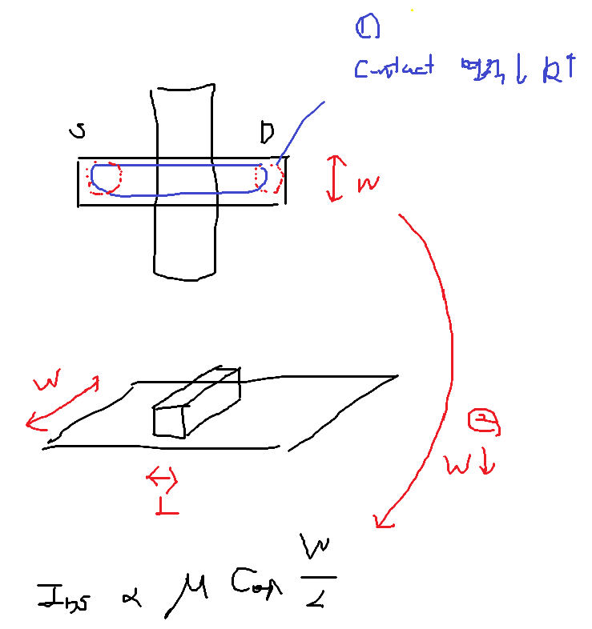
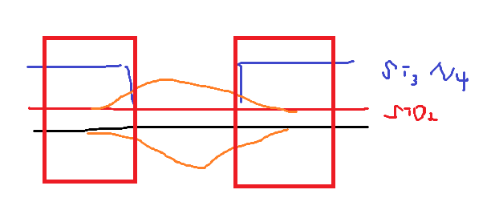
- 이런 식으로 빨간색에 MOS가 와야하는데 문제가 생긴다는 것을 그냥 받아들이지 말고 이해하고 넘어갈 것
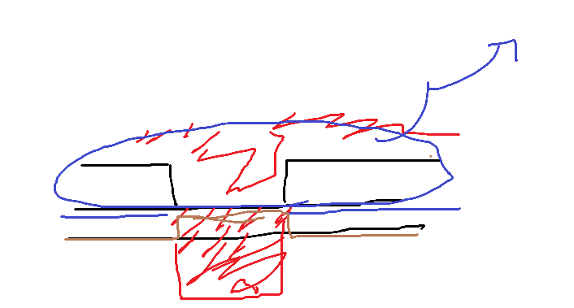
- Nitride는 인산으로 날리고, 그 선택비가 SiO₂랑 비교했을 때 100:1 이라는 것이다.
- 요즘은 SiO₂는 CVD 이건 ALD이건 증착시키는 것이다. 그 위는 CMP로 갈아내고 그 다음 Si₃N₄를 날리고 이 때 날릴 때 H₃PO₄를 날리는 것이다.
35pg - CMP slurry 종류
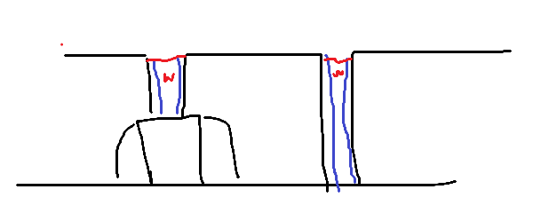
- Ti/TiN (Barrier Metal) 깔기 → W 깔기 → CMP 하기 (W랑 Barrier Metal까지 원래는 날라감)
- 근데 이렇게 하지 않고 W을 그냥 모든 면적을 Blanket Etch를 진행한다. 이러면 CMP를 진행하지 않고서도 Etch가 가능하다.
→ 결국에 Ti/TiN이 위에서 끊겨 있어야 하는건 동일하다. 이거 왜 모르지? 알고 있어야지
Ref) HKMG
- High-k와 Metal gate 와의 조합으로 가야한다.
Q. 이거 왜 그런데?
A. 밥 먹고 생각해보자
12. 오후 수업
Career path에 대한 고민
TRUMPF: 펌프 (CO₂ Laser를 만든다고 함)
Cymer: 모듈을 만드는 곳으로 ASML이 인수했다.
ASML이 삼성에 들어가면 TRUMPF와 Cymer가 같이 들어가서 작업을 하는 것이다.
RMG (Replacement Metal Gate) → 내가 궁금했던 부분임!! 꼭 챙겨가기
Ref) I = μ Cox WL
- Electron mobility를 계산하기 위해 Strain Engineering?
– 밑에서 Poly-Si를 wet etching으로 식각한 뒤에 나온 얘기
- Poly-Si를 만들고 그 다음 Poly-Si를 Wet-etching을 하고 Ti/TiN → W 을 증착하는 플로우
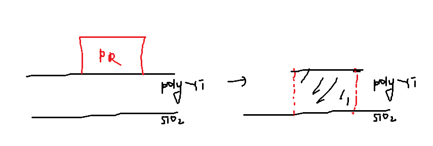
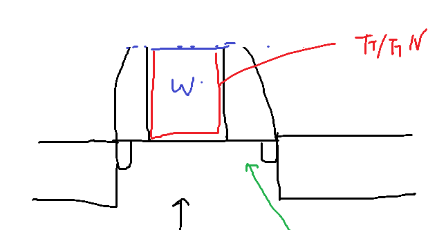
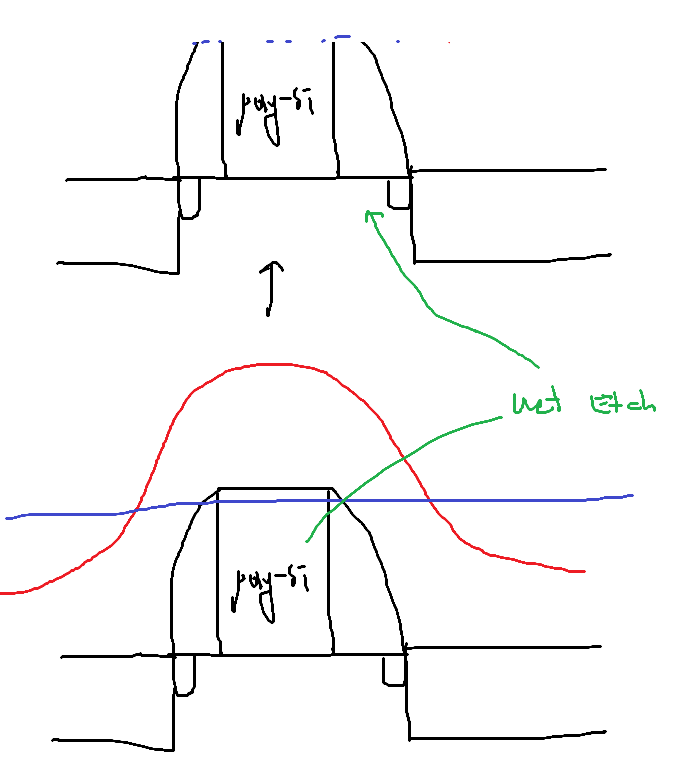
38pg - CMP Slurry
(1) Dispersion Technology
(2) Formulation Tech
(3) Contamination Control
39pg
- MS는 균일하게 되어있는 것, PI는 불규칙하게 존재하는 것, PSM 다양한 크기를 갖고 있다.
- 정형화되어있지 않고 사이즈가 다양한 PI가 가장 Removal rate이 클 것이다. 그리고 PSM 그리고 MS이다.
- 이 내용보다 중요한건 이것들은 컨트롤 된다는 것이다. Removal rate 측면에서는 이렇고, Uniformity 측면에서는 작고 균일한게 제어가능하고 좋을 것이다.
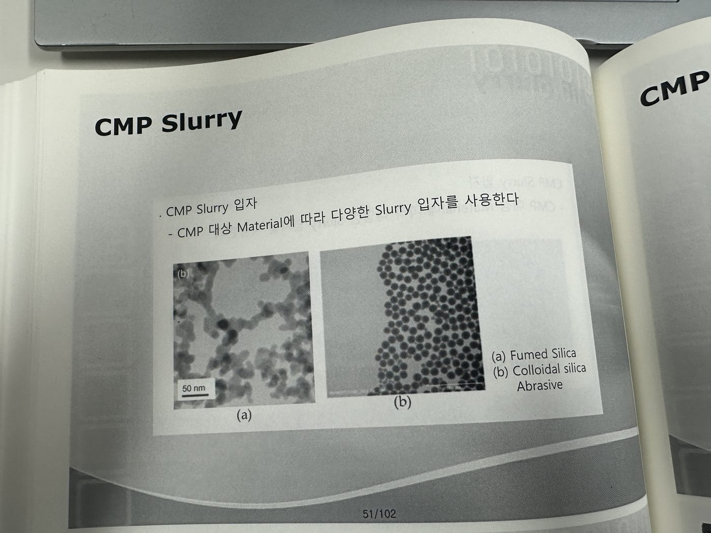
(1) Fumed Silica - 40, 41pg
- 집합체의 사이즈, 하나의 particle도 각각이 조절 요소이다.
- 1500°C에서 제작
- 하지만 너무 응집이 많이 되면 스크래치를 낼 수 있고, 식각은 잘되겠지만 균일도는 낮을 것이다.
- 애네는 비정형의 형상
(2) Colloidal Silica - 42, 43pg
- 이건 액체 상에서 존재한다. 콜로이드 상태로.
- 결국에 Stable 하기 위해서는 Colloid 상태로 존재해야한다.
- Aggregation이 일어나지 않게 계면활성제나 Dispersion 이런걸 넣어준다.
- 애는 균일한 형상
13. Zeta potential -44, 45, 46pg
- Stern layer는 딱 달라붙어서 움직이지 않는 층이다.
- Stern layer에서 반대 전하가 달라붙으니까 중화가 될 것이다.
- 그렇게 되면 바깥에서는 같은 전하들도 달라붙을 것이고, 그에 따라 표면에서 느껴지는 +나 - 의 정도는 달라질 것이다.
- 반데르 발스 힘은 달라붙으려고 하고, 정전기적 반발력은 밀어내려고 한다.
대상: “반데르 발스 힘은 달라붙으려고 하고, 정전기적 반발력은 밀어내려고 한다.”
왜 반데르발스 힘은 달라붙으려고 하는데?
14. 다양한 Slurry들
- Silica - SiO₂
- Ceria - Si₃N₄ 와 SiO₂에서 Si₃N₄에 대한 선택비가 좋다.
- Metal slurry는 W, Cu Slurry로 나눌 수 있다.
– W는 H₂O₂와 Al₂O₃로 구성되고, 산화시켜서 연마시킨다.
– Cu는 H₂O₂와 Ethanol, NH₄OH로 구성된다.
Q. 아까 점심시간에 나왔던 질문
A.
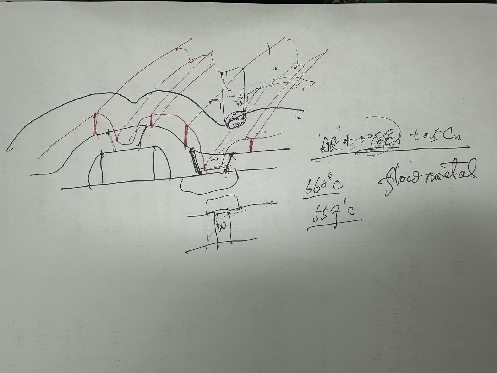
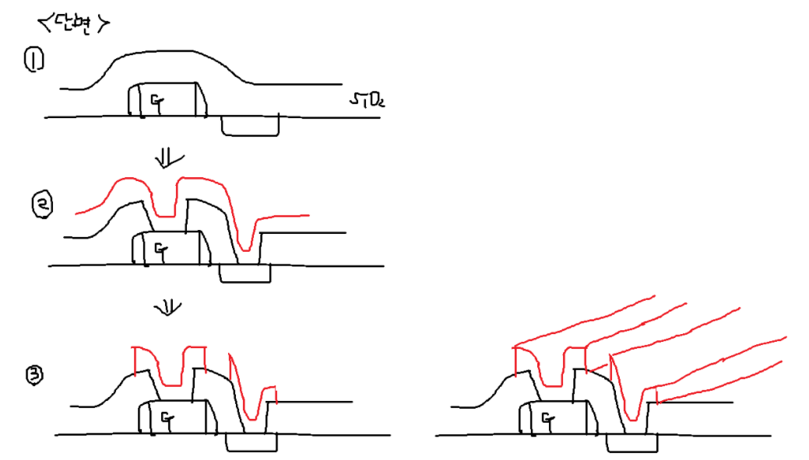
- 2번에서 구멍을 살짝 기울기있게 만드는 이유는 sputtering을 통해서 Al PVD 증착할 때 잘 증착될 수 있게 하기 위함이다.
- 이 때는 Etch를 하더라도 평탄화를 시킬 수는 없었던 것이다. 불순물이 섞인 Al의 낮은 녹는점을 이용해서 metal이 흐르게 해서 평탄화를 시키거나, BPSG 같은 짓들 CMP가 존재하기 전에 진행했던 짓들이다. 그리고 W이 등장하기도 했고
- 근데 헷갈리는게 여기에서 contact이 어디로 연결되는지 어떻게 아는거야? 아래 사진을 보면 B/L 과 연결된 contact은 좌측 앞이고, Word line 과 연결된 contact은 뒤에서 연결되고 왜이러는겨??
Ref) 13일차 다른 강사님 - 생각을 돕기 위함
대상: “근데 헷갈리는게 여기에서 contact이 어디로 연결되는지 어떻게 아는거야? 아래 사진을 보면 B/L 과…”
이건 어떻게 아는거지? 그냥 받아들이는 영역인가?
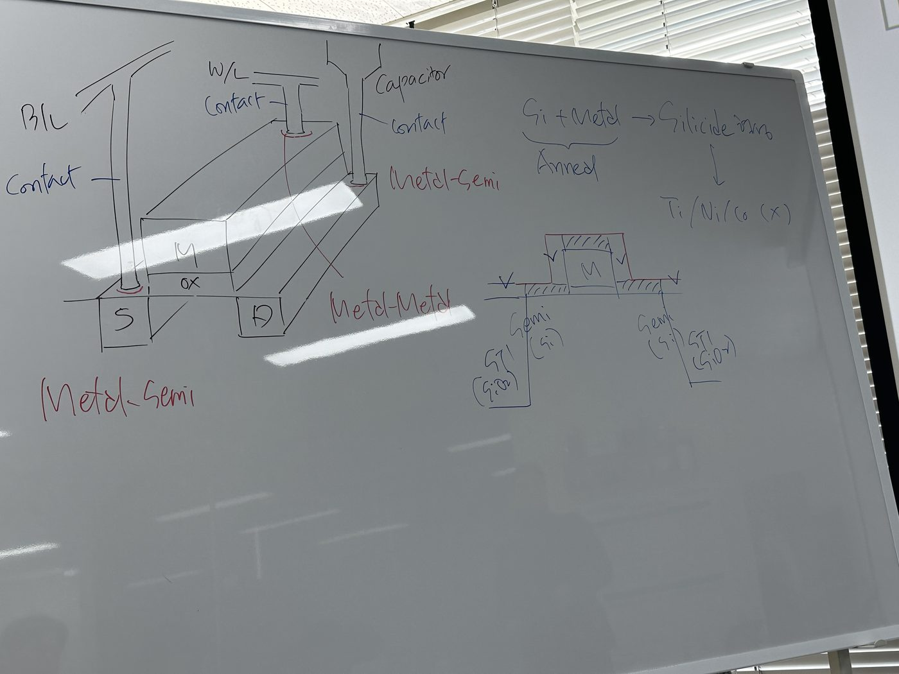
CMP Slurry - 52pg~57pg - 이 파트에서 calcination 세라믹 때 배웠던 내용도 나오고, TEM 얘기도 나오고, 입자들의 크기 조절, 분포 같은 얘기가 나오네. 잘 정리해보자 나랑 연결시킬 수도 있을듯
→ Ceria 는 CeO₂에 대한 얘기이다. CeO₂는 Slurry에 존재하는 연마제이다.
15. Ceria (CeO₂)
(1) Calcined Ceria Slurry
- 80nm~300nm가 있을 때 저게 랜덤하게 저런 범위로 갖는다는게 아니다. 필터를 통해서 걸러내서 필요한걸 사용하겠지
- 여기에서도 상대적은 작은 Small size를 사용할 수도 있는 것이다.
- Calcined는 ‘하소’한 이라는 의미이다.
- 어떻게 기본 Ceria에서 Slurry에 사용하는 슬러리가 되는지에 대한 설명이다.
(2) Colloidal Ceria Slurry
- 10nm~140nm 사이즈를 갖기 때문에 조금 더 균일하게 만들어줄 수 있겠지.
- 어쩌구저쩌구 책 보기
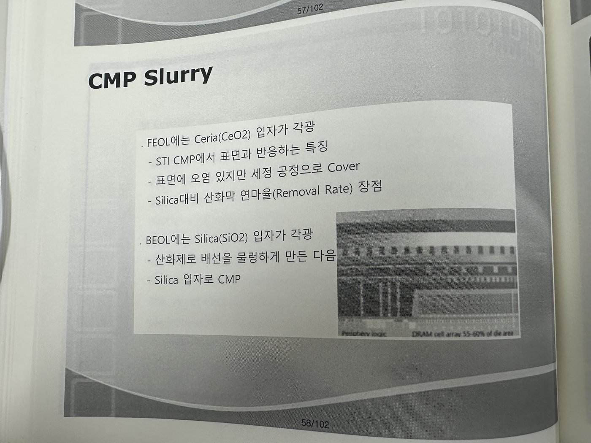
- 해당 Si₃N₄와 SiO₂의 선택비가 좋다. 그래서 FEOL에서 사용된다. Ceria를 사용하기 때문에 Si₃N₄ stopper로 사용가능하고 Removal rate가 크다.
- Back end에서는 Silica를 사용한다. why?
CMP Disk - 62pg
- Surface가 무뎌지는 것을 Conditioner (다이아가 박힘) 을 통해서 다시 표면을 제대로 만든다.
Mechanical Etch in CMP
- Particle size는 aggregation 정도겠다.
- 탄성 정도가 커지면 pad가 눌러져도 stress를 못가할테니 조금 눌리는 정도가 적어야겠지? 단단해야겠지?
Edge Engineering
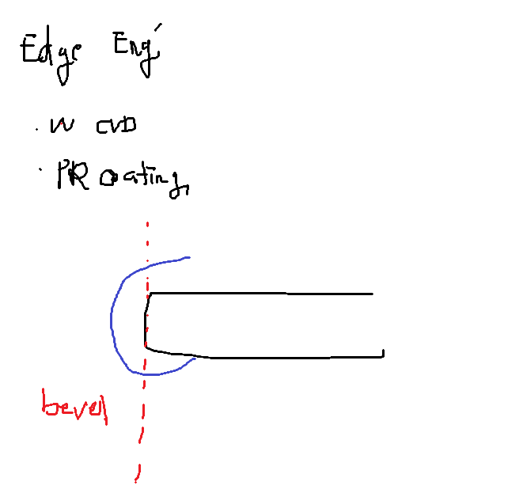
Slurry 화학물질이므로 보관을 잘해야한다.
Ref) PR coating 할 때 사용하는 PR은 빛에 반응하지 않게 하기 위해서 갈색 병에 둔다고 한다.
- 점도가 떨어질 수 있고 화학 물질이 반응하거나 변형 할 수도 있다 → 다른 performance가 나타날 수 있다.
Oxide CMP Mechanism - 68pg
- Si(OH)₄ 기가 만들어진 다는 것이지. By-product랑 같이 Drain에 빨려들어가겠다.
- H₂O가 SiO₂가 만나서 Si-OH 결합이 생기게 된다. (이것도 그래서 산화막 생겼을 때 HF 해주는 것 아니겠어?)
16. STI CMP - 71pg
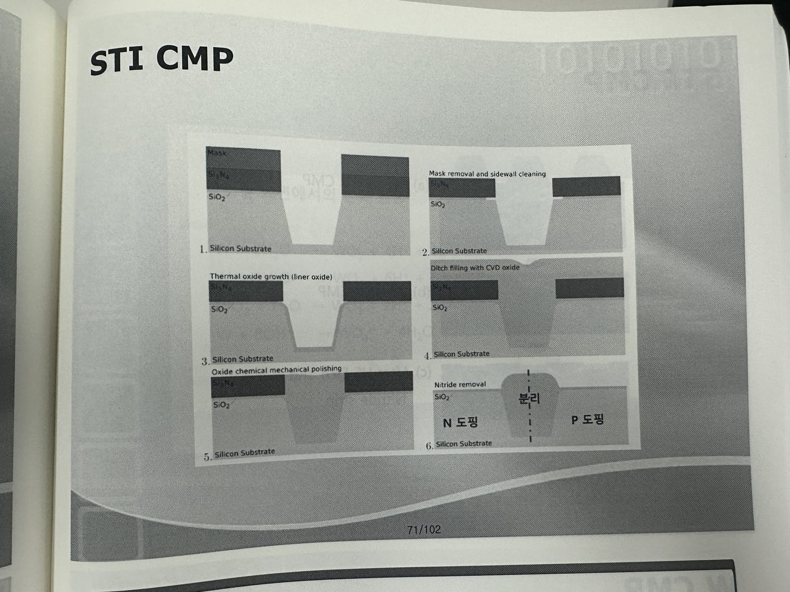
- 왜 STI에서 CeO₂를 쓴다고? Removal rate가 빠르고, SiO₂와 Nitride에 대한 선택비가 좋기 때문이다. (선택비가 좋다는 건 SiO₂에 높은 선택비로 갈아낸다는 것이다.
- CVD 장비에서 그냥 열을 줘서 Etch하고 생긴 defect들을 커버
- Si₃N₄는 인산으로 제거 (반복 또 반복)
17. W CMP - 73pg
(사진)
- 텅스텐은 직접 갈아내기 어려워서 산화를 통해서 약하게 만들어 준 다음 산화를 시킨다는 얘기이다.
- 그래서 Oxidized Tungsten에 대한 얘기가 나오고 있는 것이다.
75pg, 76pg
(사진)
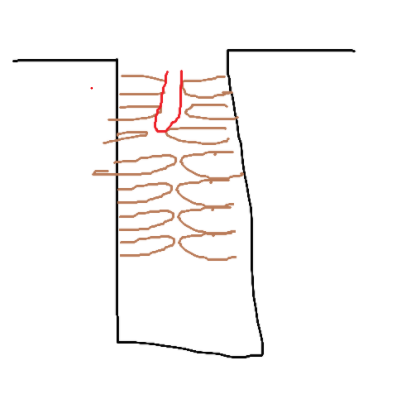
- Etching 할 때 W라고 적혀있긴 하지만 Ti/TiN가 증착되어있고, CMP를 진행해서 Ti/TiN이 연결되지 않는 깊이만큼 쭉 갈아버려야한다. (복습 또 복습)
- 76pg에서는 다양하게 산화될 수 있다는 얘기이다.
- Seam이라는 건 Grain들이 충분히 자라지 않았을 때 텅스텐에서 충분히 문제가 생길 수 있다. 빨간색 부분처럼 결정립들이 충분히 자라지 못하면 저렇게 될 수도 있지.
Q. W이 웨이퍼에서 이렇게 남았다 왜 그러한가?
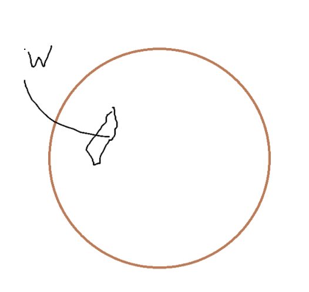
A.
- 동심원으로 돌기 때문에 압력이 한쪽에만 불균일 하면 전체적으로 돌면서 불균일 해진다. 그러니까 저 부분만 불균일하게 되지는 않았을 것이다. (if 압력이라면. 근데 답은 아니다)
→ 강사님의 접근은 이전 단계를 보자는 것이다.
- 이전 과정을 살펴보자 Oxide를 Depo를 먼저한다. Oxide를 했을 때 생긴 Defect이 그 다음 증착에도
- 이런 문제는 Blanket Etch를 통해 Etch를 할 수도 있겠고..
18. Cu CMP - 80pg, 81pg
- Barrier → Seed (PVD) → 전해도금
- 넓은 쪽에서 dishing이 일어난다는 것이다.
– pattern의 밀도가 낮은데에서는 날라간다는 것이다.
- Dishing 구리가 푹 꺼지는 것이고, 패턴 자체가 폭삭 없어지는건 Erosion이라고 한다. Cu만 살짝 내려앉는게 아니라 전체적으로 다 갈려버리는걸 말하는 것이다.
Q. 패턴이 작아지고 공간이 작아지면 어떻게 해야하는가?
A.
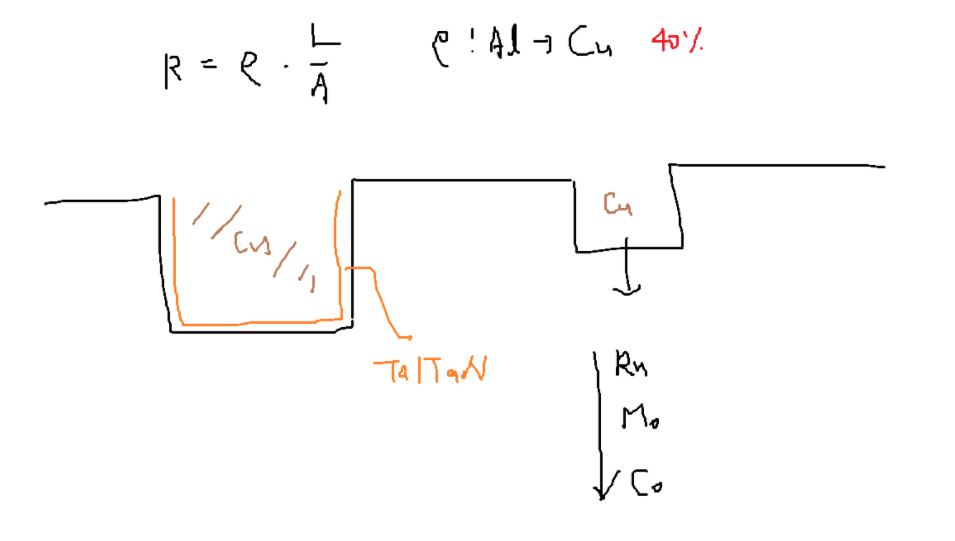
- 공간이 좁아지면 애초에 Cu가 차지할 수 있는 영역이 좁아진 상태이다.
- 그래서 사용하는 metal의 종류가 바뀌는 것이다. barrier layer를 사용하면 이미 공간이 좁은데 단일로만 사용해야 하는 상황이 온다는 것이지. 그래서 소재가 바뀌고 있고 Ru, Mo, Co로 바뀌고 있다.
- 결국에 이 어려운 metal들도 CVD를 할 것이고, CMP로 갈아내야겠지?
19. Future Tech - 99pg
- Backside Power는 새롭게 끌어와서 붙이는 것이다. → 이것도 전압 강하 이슈에 대응하는 방법인가?
CMP Tool Maker - 101pg
- Cabot, Fujimi 이런데도 다 슬러리 만드는 회사들. 우리나라에는 동진쎄미캠
20. 지난 주 숙제에 대한 설명
Q. 플라즈마는 왜 보라색을 띠는가?
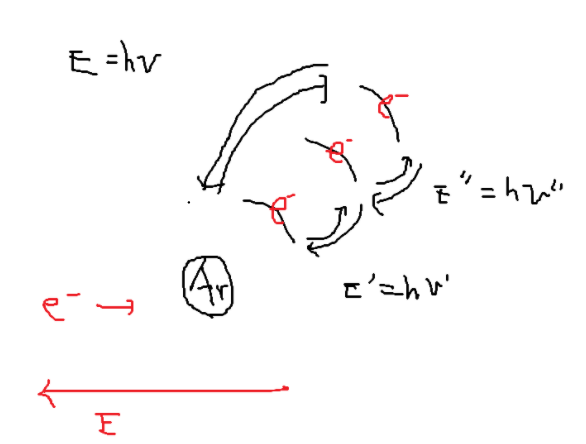
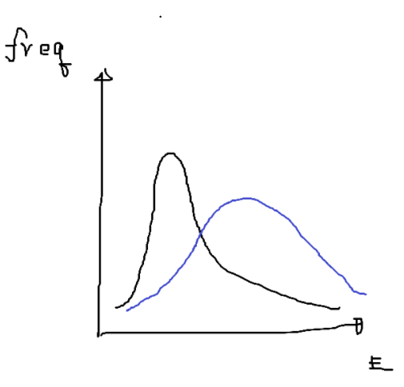
전기장이 걸렸을 때 Ar이온을 빵 때린다. 그러면 이온화를 시킬 수 있는 Energy 이상을 가질 때 Ar 15.8eV를 가졌을 때 3번째 껍질에서 이온화가 되는 것이다.
그 때 전자를 한 개 잃었을 때는 Ar+가 되겠지?
그렇지만 이온화 시킬만큼의 에너지가 가해지지 않았을 때는 전자가 여기되었다가 방출할 것이다. 이 때 E=hν에 식에 의해서 나오는 빛의 파장 색이 보라색이라는 것이다.
하지만 실제로 1→3으로만 가라는 법은 없다. 1→2, 2→3, 3→2, 2→1 도 있을 것이다.
여기까지는 문제에 대한 설명이었다.
EEDF?
원자들에 따라서 에너지 대역별로 가지고 있는 전자의 분포가 다르다. 그래서 특정 에너지를 갖고 있는 분포가 다르며 실제 파장대를 다 방출하는 것이 아니다. 그래서 실제로는 특정 에너지에 해당 전자가 많이 분포하고 있는 부분이 지배적인 것이다. 그래서 빛의 색은 파장대에서 나온 모든 빛을 반영하는게 아니라, 전자가 많이 분포하고 있는 에너지 영역대의 빛이 지배적으로 띠는 것이다?